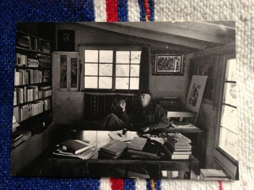
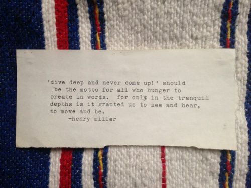

Stuff, Part I
There’s nothing better than moving countries to make me seriously question the stuff in my life. What use is it? Why do I even have it? And why, once I get rid of it, do I only manage to acquire more? I do not collect much else besides books (I do have a soft spot for blankets) yet there are things that have followed me from country to country, city to city, apartment to apartment. I believe that these things that tramp along with me in suitcases or boxes tend to have a meaning and whatever that meaning is, whatever moment or moments they help me to remember, remains locked in the things like a secret doorway whose existence only I know about: a mug garnered from someone’s tossed away things in Oakland, California, a blanket bought on a hill overlooking Fez, Morocco. Sometimes this seems silly to me—how can an object be anything more than itself?—but othertimes I quite like the stability these things bring, especially in moments of transition, of tossing off the old to step forward lightly into the new.
Here are two things (admittedly very book related) that I have moved around from place to place.

- A postcard of Henry Miller sitting at his desk in Big Sur, California, bought in Big Sur, California, about one month before Simon and I moved away from Oakland in 2007. We drove down to the Henry Miller Library with our very good friends, Kim and Ryan, and stayed overnight at a campground nearby. This postcard makes me remember the imperial redwoods behind Henry Miller’s cottage and the lush green of a northern California forest; it makes me remember the campground near the ocean where a radio woke me early in the morning and I peed in a bush late at night.

- A quotation by Henry Miller typed on my then-new Olivetti Lettera 22 during the sweltering summer of 2003 and hung on my wall in the apartment on Via Farini, Rome. I spent every day that summer writing and learning how to fail at it and how glorious it feels to let the mind wander far beyond the page while the fingers construct the sentences. Reading this quotation on this piece of paper always brings back that delicious exaltation I associate with my first attempts to write.
· · · · · · · · · · · · · · · · · · · ·